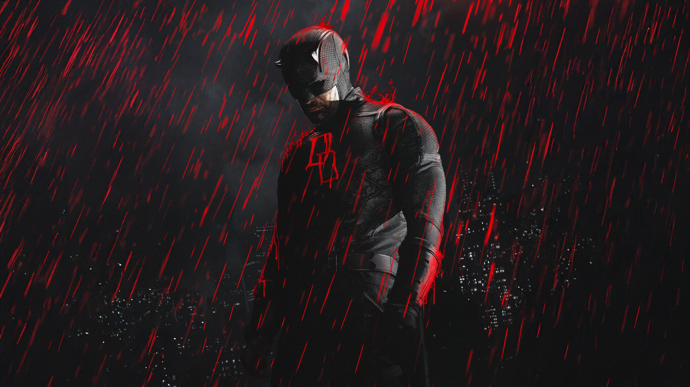

Marvel nació en 1939 bajo el nombre de Timely Publications, fundada por Martin Goodman. Años después, la compañía se convirtió en Marvel Comics y comenzó a desarrollar algunos de sus personajes más famosos. Entre sus principales creadores destacan Stan Lee, Jack Kirby y Steve Ditko, quienes dieron vida a personajes como Spider-Man, los Cuatro Fantásticos, Hulk, Iron Man y muchos otros.
Spider-Man es uno de los superhéroes más populares y reconocidos de Marvel. Su identidad es Peter Parker, un joven estudiante que obtiene poderes especiales después de ser mordido por una araña que había sido alterada científicamente. A partir de ese momento, Peter descubre que tiene habilidades como una gran fuerza, agilidad, reflejos sobrehumanos, la capacidad de trepar paredes y un sentido arácnido que le permite detectar el peligro. Además, utiliza unos dispositivos creados por él mismo para lanzar telarañas y desplazarse por la ciudad. Después de experimentar una gran pérdida personal, Peter comprende que sus poderes también implican una responsabilidad y decide utilizarlos para proteger a las personas y combatir el crimen. A pesar de ser un héroe, Spider-Man también enfrenta problemas cotidianos como los estudios, el trabajo, las relaciones y las dificultades de ser una persona común mientras lleva una vida como superhéroe.

Daredevil es uno de los héroes más reconocidos de Marvel y su identidad es Matt Murdock, un abogado que vive en Hell's Kitchen, Nueva York. Cuando era niño, Matt sufrió un accidente con una sustancia química que lo dejó ciego, pero al mismo tiempo desarrolló sus otros sentidos de una manera extraordinaria. Gracias a su oído, olfato, tacto y sentido del equilibrio, puede percibir su entorno con una precisión sorprendente. Durante el día, utiliza sus conocimientos como abogado para defender a las personas que lo necesitan, mientras que por las noches se convierte en Daredevil, un vigilante que combate el crimen y se enfrenta a peligrosos criminales. Aunque no posee superpoderes tradicionales como otros héroes, destaca por su entrenamiento físico, sus habilidades de combate, su inteligencia y su determinación. Su historia representa la lucha entre la justicia, la moral y las dificultades personales que debe enfrentar mientras intenta proteger su ciudad.
negrilla No negrilla